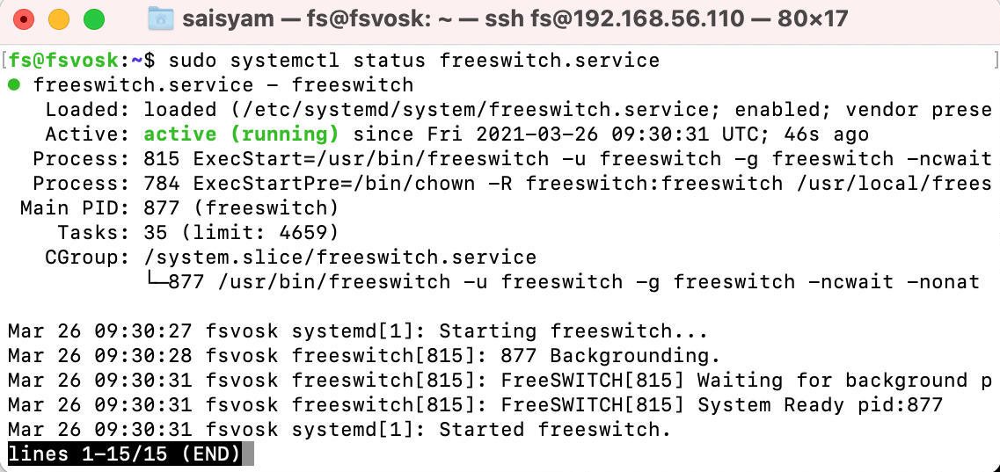

FreeSWITCH is a Software Defined Telecom Stack enabling the digital transformation from proprietary telecom switches to a versatile software implementation that runs on any commodity hardware. From a Raspberry PI to a multi-core server, FreeSWITCH can unlock the telecommunications potential of any device.
Build FreeSWITCH from source
FreeSWITCH recommends Debian as their installation platform as most of the development happens on that platform. In this article we see how to install FreeSWITCH 1.10.5 on Ubuntu 18.04. Below are the list of steps we follow to install FreeSWITCH on Ubuntu:
- Bring up a VM (I use Virtualbox) and install Ubuntu 18.04 server.
- Install dependent packages to compile FreeSWITCH
- Compile and build SpanDSP and sofia-sip
- Download FreeSWITCH source, build and install
- Make FreeSWITCH to run as a service
Note: The scope of this article is to install and run FreeSWITCH successfully on Ubuntu 18.04. We don’t configure FreeSWITCH to handle incoming/outgoing calls.
Setup Ubuntu 18.04 server
I use Virtualbox to create an Ubuntu 18.04 server with 30GB of hard disk space and 4GB of RAM. You can build the same or use a desktop or laptop running Ubuntu 18.04. If you want more information on how to install Ubuntu on Virtualbox refer to this article.
Install dependent packages to compile FreeSWITCH
We need some dependent packages to compile FreeSWITCH code. FreeSWITCH is built on C/C++. Let’s install the packages on Ubuntu server using its package manager by ssh into the server:
$ sudo apt -y update
$ sudo apt-get install -y curl git gnupg wget subversion build-essential autoconf automake libtool libncurses5 libncurses5-dev make libjpeg-dev libtool libtool-bin libsqlite3-dev libpcre3-dev libspeexdsp-dev libldns-dev libedit-dev yasm liblua5.2-dev libopus-dev cmake
FreeSWITCH comes with lots of modules. For example, it has support for MySQL, MongoDB, PostgreSQL etc. Most of the deployments use only one database and want to disable the other. So, they don’t install dependent packages of the modules which they don’t need. But in our case we install FreeSWITCH with default modules enabled. Below is the list of additional packages we need:
$ sudo apt-get install -y libcurl4-openssl-dev libexpat1-dev libgnutls28-dev libtiff5-dev libx11-dev unixodbc-dev libssl-dev python-dev zlib1g-dev libasound2-dev libogg-dev libvorbis-dev libperl-dev libgdbm-dev libdb-dev libpq-dev uuid-dev libsndfile1-dev libavformat-dev libswscale-dev
We have compile and build libks
$ git clone https://github.com/signalwire/libks.git
$ cd libks
$ cmake .
$ make
$ sudo make install
$ sudo ldconfig
Compile and build SpanDSP and sofia-sip
According to FreeSWITCH 1.10.x release notes SpanDSP and sofia-sip packages are removed from build. We need to compile and build them separately.
Execute the below commands to build sofia-sip:
$ git clone https://github.com/freeswitch/sofia-sip.git
$ cd sofia-sip
$ ./bootstrap.sh -j
$ ./configure
$ make
$ sudo make install
$ sudo ldconfig
Execute the below commands to build SpanDSP:
$ git clone https://github.com/freeswitch/spandsp.git
$ cd spandsp
$ ./bootstrap.sh -j
$ ./configure
$ make
$ sudo make install
$ sudo ldconfig
Download FreeSWITCH source, build and install
We can download the FreeSWITCH release source code from Github releases. Execute the following commands to download, build and install FreeSWITCH:
$ wget -q https://github.com/signalwire/freeswitch/archive/v1.10.5.tar.gz
$ tar xf v1.10.5.tar.gz && cd freeswitch-1.10.5
$ ./bootstrap.sh -j
$ ./configure
Once configure is successfully completed, modules.conf file is created in freeswitch-1.10.5 folder. You can comment out unnecessary modules in modules.conf file so that FreeSWITCH will not build those modules. As of now we will comment out only one module, mod_signalwire.
$ sed -i -e 's+^applications/mod_signalwire$+#applications/mod_signalwire+' ./modules.conf
Let’s start the build:
$ make
$ sudo make install
$ sudo ldconfig
After successful installation we need to install default sounds and voice files.
$ sudo make -j -- cd-sounds-install cd-moh-install
FreeSWITCH is installed at /usr/local/freeswitch and the binaries are available at /usr/local/freeswitch/bin folder.
Now you can run FreeSWITCH using:
$ cd /usr/local/freeswitch/bin
$ sudo ./freeswitch -nonat
fs_cli is a FreeSWITCH command-line interface that allows a user to connect to running FreeSWITCH instance. Open the other terminal and run:
$ cd /usr/local/freeswitch/bin
$ sudo ./fs_cli
Make FreeSWITCH to run as a service
By default FreeSWITCH will not be installed as a service in Ubuntu. Let’s make it a service
Add new group and user with less privileges to run FreeSWITCH service.
$ cd /usr/local
$ sudo groupadd freeswitch
$ sudo adduser --disabled-password --quiet --system --home /usr/local/freeswitch --gecos "FreeSWITCH Voice Platform" --ingroup freeswitch freeswitch
$ sudo chown -R freeswitch:freeswitch /usr/local/freeswitch/
$ sudo chmod -R ug=rwX,o= /usr/local/freeswitch/
$ sudo chmod -R u=rwx,g=rx /usr/local/freeswitch/bin/
We need to add FreeSwitch as a systemd unit file. Open new file /etc/systemd/system/freeswitch.service using vim editor paste the below content:
[Unit]
Description=freeswitch
Wants=network-online.target
Requires=syslog.socket network.target local-fs.target
After=syslog.socket network.target network-online.target local-fs.target
[Service]
Type=forking
Environment="DAEMON_OPTS=-nonat"
EnvironmentFile=-/etc/default/freeswitch
ExecStartPre=/bin/chown -R freeswitch:freeswitch /usr/local/freeswitch
ExecStart=/usr/local/freeswitch/bin/freeswitch -u freeswitch -g freeswitch -ncwait $DAEMON_OPTS
TimeoutSec=45s
Restart=always
RestartSec=90
StartLimitInterval=0
StartLimitBurst=6
User=root
Group=daemon
LimitCORE=infinity
LimitNOFILE=100000
LimitNPROC=60000
LimitSTACK=250000
LimitRTPRIO=infinity
LimitRTTIME=infinity
IOSchedulingClass=realtime
IOSchedulingPriority=2
CPUSchedulingPolicy=rr
CPUSchedulingPriority=89
UMask=0007
NoNewPrivileges=false
[Install]
WantedBy=multi-user.target
Start FreeSWITCH service and enable it on system startup
$ sudo chmod ugo+x freeswitch.service
$ sudo systemctl start freeswitch.service
$ sudo systemctl enable freeswitch.service
Now check status of FreeSWITCH service
$ sudo systemctl status freeswitch.service

Conclusion
In this article we learnt how to install FreeSWITCH on Ubuntu 18.04. This is a default installation with all the modules included. Production ready installations remove lot of unnecessary modules which reduces build and load time. You can configure what modules need to be loaded during startup by changing modules.conf.xml file under /usr/local/freeswitch/conf/autoload_configs folder. In the coming articles we will see how to configure FreeSWITCH to handle simple inbound and outbound calls.